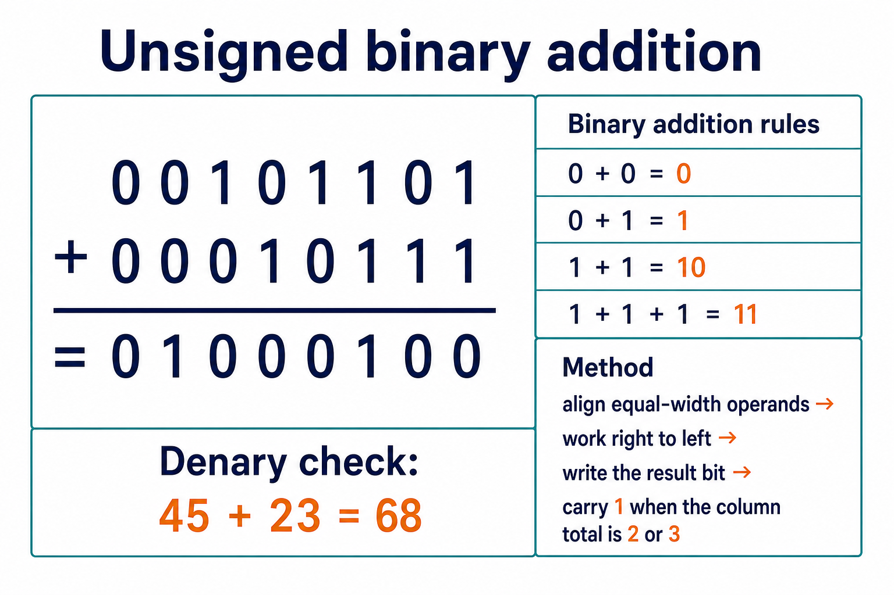

Unsigned binary addition and subtraction
Visual overview
Unsigned binary addition

Visual transcript
- Align equal-width operands and add from right to left.
- A column total of 2 writes 0 and carries 1; a total of 3 writes 1 and carries 1.
- 00101101 plus 00010111 equals 01000100, which is 45 plus 23 equals 68.
Core explanation
An unsigned binary integer uses every bit as a non-negative place value. An unsigned 8-bit value represents an integer from 0 to 255.
For addition, align equal-width operands and work from the rightmost bit to the left. Use 0 + 0 = 0, 0 + 1 = 1, 1 + 1 = 10 and 1 + 1 + 1 = 11, carrying 1 into the next column when required.
For unsigned subtraction, align equal-width operands and borrow from the next column when the upper bit is smaller than the lower bit. A negative mathematical result cannot be represented as an unsigned value.
Unsigned binary addition
- Align equal-width operandsPlace bits with the same value in the same column.
- Start at the rightAdd both bits and any carry from the previous column.
- Write and carryWrite the result bit and carry 1 left for totals 2 or 3.
- Complete every columnKeep the result at the stated width for later checking.
Worked example · Add two unsigned 8-bit integers
- Write equal-width operands
45 is 00101101 and 23 is 00010111.
- Add from right to left
Apply the four column rules and carry 1 into the next column whenever the column total is 2 or 3.
- Record the result
00101101 + 00010111 = 01000100.
- Interpret the result
01000100 represents 68 as an unsigned 8-bit integer.
Worked example · Subtract with a borrow through zero
- Align
Subtract 00010011 (19) from 00110100 (52), starting at the rightmost column.
- Borrow
The 1s column needs a borrow. Take the 1 from the 4s column: leave 0 there, pass through the 2s column leaving 1, and place binary 10 in the 1s column.
- Subtract
In the 1s column, 10₂ − 1₂ = 1₂. In the 2s column, 1 − 1 = 0. Complete the remaining columns to obtain 00100001.
- Check
52 − 19 = 33, which is 00100001 in eight bits.